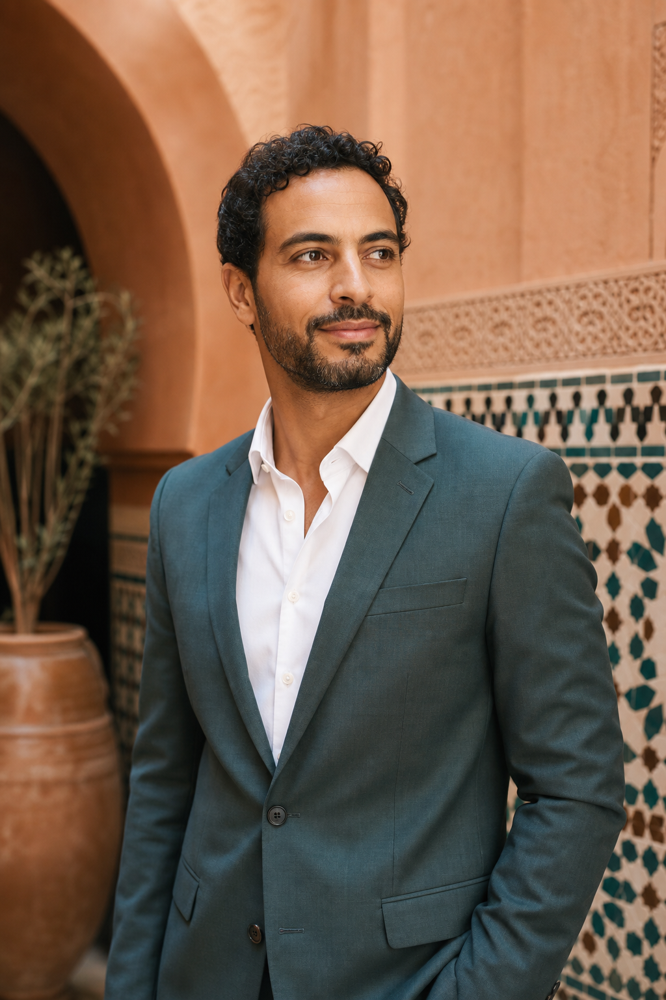
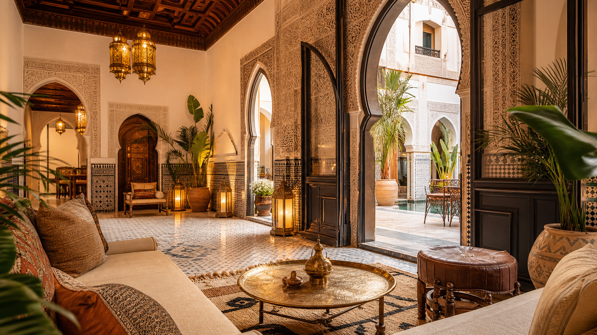
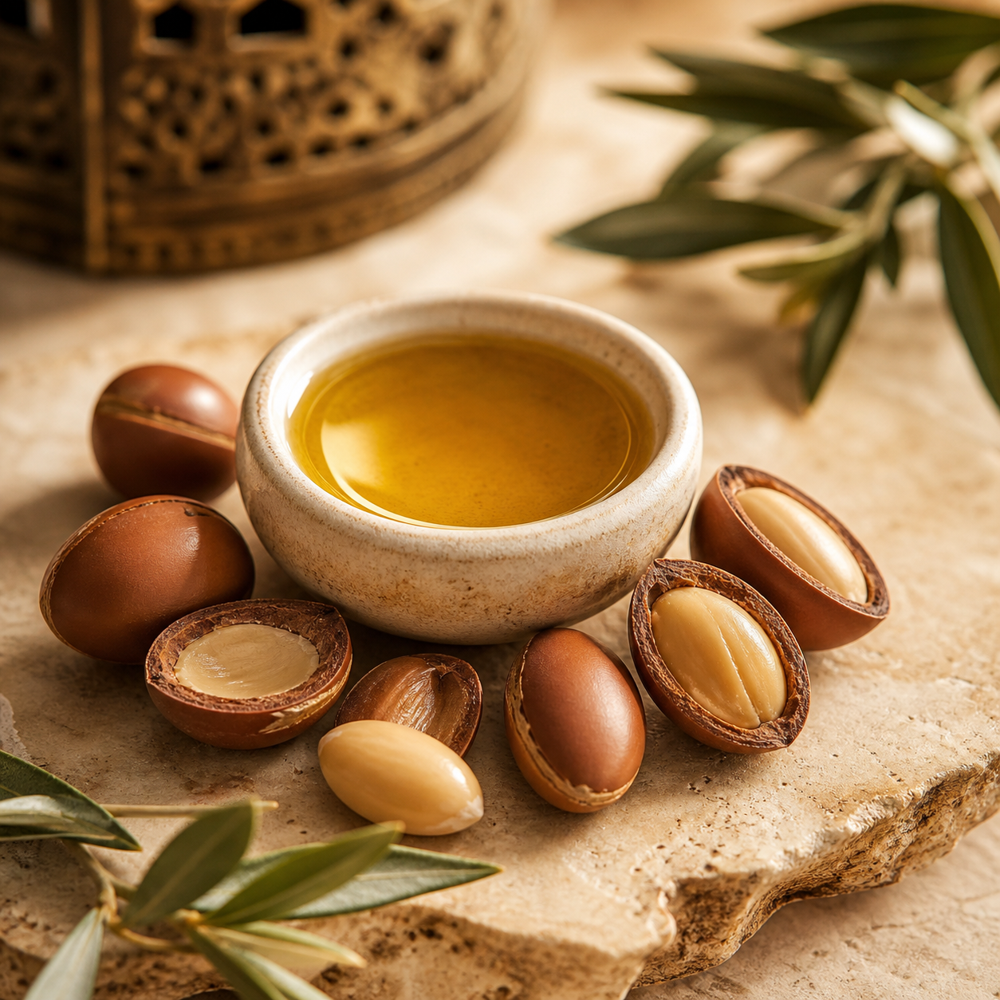
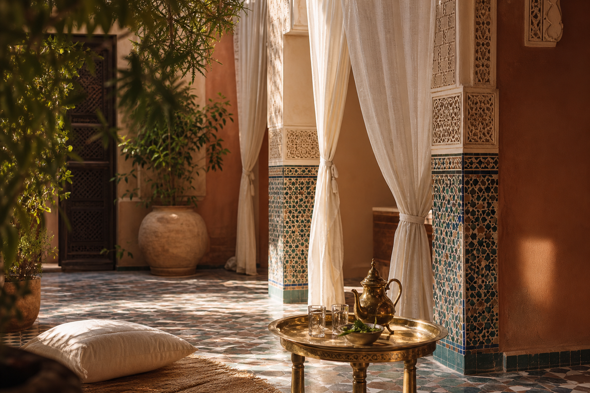
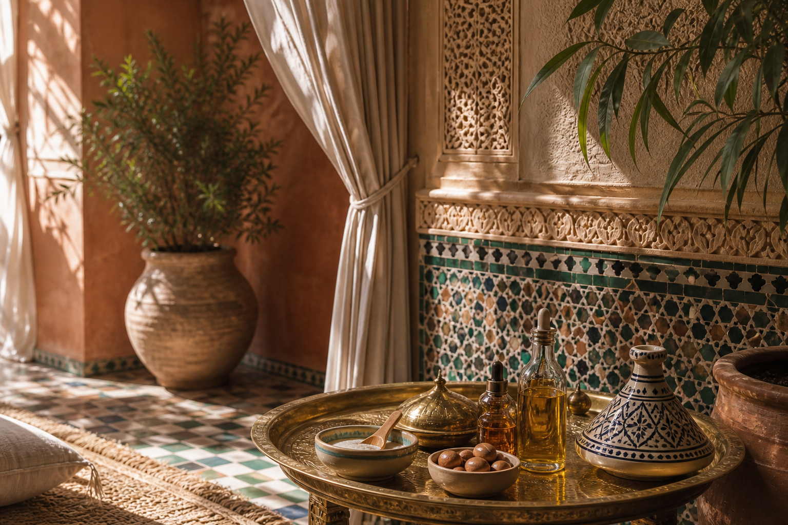
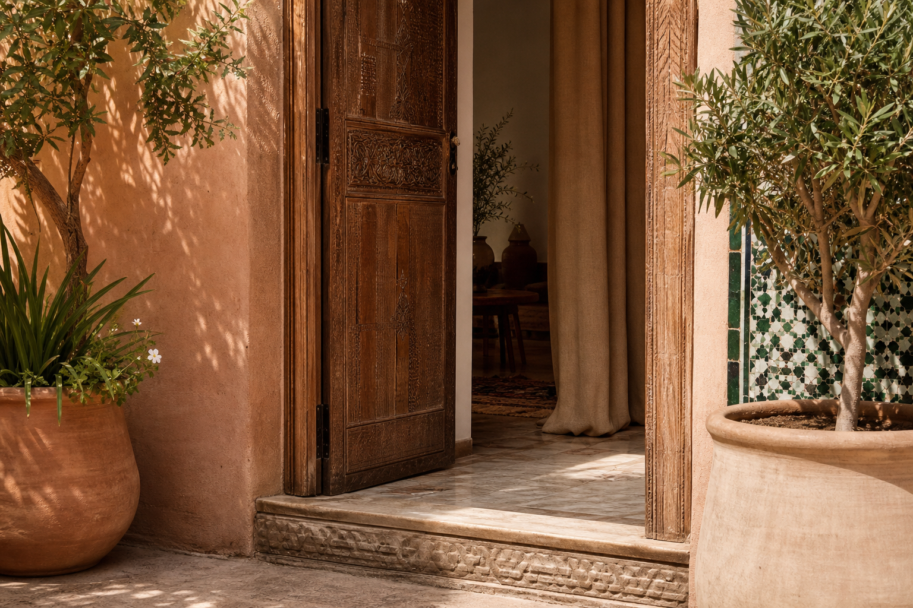

La Soglia · Via Padova, Milano
Il parrucchiere marocchino di Via Padova.
Taglio, colore e il rito dell'argan, fatti da chi con i capelli ricci, lisci e spessi è cresciuto. Guarda i servizi, i prezzi e come prenotare in trenta secondi.
Siamo su Via Padova 37, la via più nordafricana di Milano. Capelli ricci, ondulati o spessi: qui li conosciamo da sempre.

Il Cortile · Chi siamo
Un salone marocchino, su una strada marocchina.
Marrakech è nato su Via Padova, dove il quartiere parla arabo, italiano e mille altre lingue. Il team è marocchino: i capelli che tagliamo ogni giorno sono quelli con cui siamo cresciuti.
Non imitiamo un'estetica. La conosciamo. Ricci stretti, onde spesse, lisci pesanti: sappiamo come cadono, come si asciugano e come tengono la piega dopo una settimana.
Per questo non serve spiegarci i tuoi capelli. Ce li racconti una volta, e la volta dopo li ricordiamo.

Il Banco · Servizi e prezzi
Cosa facciamo, quanto costa.
Niente listino nascosto. Ecco da dove partono i prezzi, così decidi prima di entrare.
Prezzi di partenza indicativi, da confermare in salone in base a lunghezza e servizio.

Il Rito dell'Argan
La rifinitura all'olio di argan.
È la cosa che un salone qualsiasi non ti sa fare. L'olio di argan, quello vero del Marocco, dà ai capelli spessi e ricci la luce e la morbidezza che il phon da solo toglie.
01 Lettura del capello
Guardiamo texture e stato prima di toccare l'olio. Ricci, onde e lisci spessi assorbono in modo diverso.
02 Applicazione a caldo
Poche gocce, lavorate lunghezza per lunghezza. Niente eccessi: l'argan si assorbe, non appesantisce.
03 Posa e massaggio
Un minuto di massaggio perché l'olio entri davvero, non resti in superficie.
04 Rifinitura
Asciughiamo e chiudiamo la piega. Il risultato tiene la settimana, non solo l'uscita dal salone.
Le Mani · Chi ti taglia i capelli
Le mani che tengono le forbici.
Dietro la sedia c'è sempre qualcuno del nostro team, mai un turno che cambia ogni mese. Chi ti taglia oggi si ricorda come li vuoi la volta dopo.
Il mestiere lo abbiamo imparato in Marocco e lo pratichiamo a Milano da anni. Prima di iniziare chiediamo cosa vuoi davvero, e se una cosa non sta bene te lo diciamo.
La Parete · Galleria
Gli scorci del salone.
Corridoi ad arco, piastrelle zellige, i dettagli del rito. Immagini d'atmosfera dello spazio in cui lavoriamo.


Perché Tornano
Il quartiere torna, per tre motivi.
Non promettiamo niente di grosso. Facciamo bene tre cose semplici, e la gente se ne accorge.
Ci capiamo sui capelli
Non devi spiegare che tipo di capello hai. Lo vediamo e sappiamo come trattarlo, ricci stretti o lisci spessi che siano.
Il taglio tiene
Esci in ordine e resti in ordine. La piega e il finish all'argan durano oltre la giornata, non solo la foto appena fatta.
Ti trovi bene appena entri
Ci si parla, si prende tempo, si spiega cosa si fa. Nessuna fretta e nessun servizio che non hai chiesto.

L'Uscio · Visita e prenota
Passa da noi su Via Padova.
20127 Milano
Orari indicativi, confermali con una chiamata.
+39 320 4485897 — per ora si prenota per telefono.